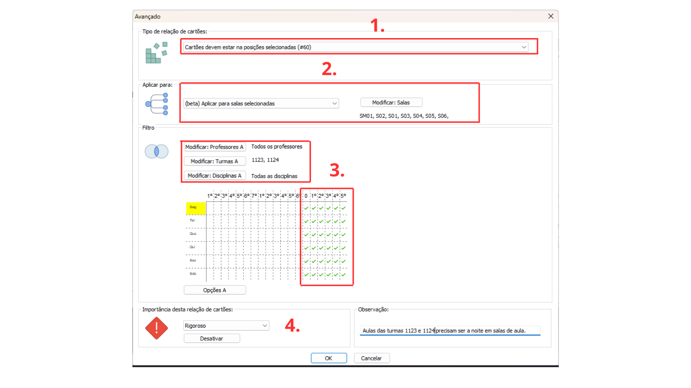

Detalhes do post:
Aulas de Turma Restritas a um Período e Salas Específicas:
Descrição:Todas as aulas de uma turma devem ser dadas em um período específico (manhã/tarde/noite) e em salas de aulas específicas
Para resolver esse tipo de situação devemos restringir a colocação dos cartões das aulas usando as relações entre cartões avançados.

1- Selecione o tipo de restrição “Cartões devem estar nas posições selecionadas (#60)”.
2- Selecione a opção “Aplicar para salas selecionadas”,vá em “Modificar Salas” e selecione as salas específicas em que as turmas deverão ter aulas.
3- Utilize os filtros “Modificar Professores” e “Modificar Disciplinas” para aplicar a todos os professores e disciplinas das turmas especificadas; Utilize o filtro “Modificar Turmas” para selecionar aquelas turmas que a restrição deve afetar .
Selecione no quadro de horários os dias e períodos em que as turmas devem ter aulas nas salas selecionadas no passo 2 ( no exemplo selecionamos todos os dias da semana no período noturno).
4- Selecione a importância da Restrição, entre: baixa, normal, alta, rigoroso ou otimizar; de acordo com a importância a ser atribuída a essa relação na instituição.
Também escreva uma observação que facilite a identificação da restrição e explique seu objetivo.
Clique em “ok” no canto inferior para salvar a relação.